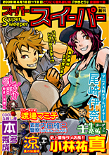

|
2010/07/29〜8/1 とりにく 第五回公演
大正妖奇譚 -TAISHOU AYAKASHI KITAN-
劇場：吉祥寺シアター
作演出：あやし
|
 |
2009/12/11〜13 とりにく 第四回公演
【人形屋】
劇場：池袋シアターグリーン BOX in BOX
作演出：あやし
|
|  |
2009/04/17〜19 とりにく番外編公演
やきとり企画 【スーパースイーパー】
劇場：池袋GEKIBA
作演出：あやし
|
 |
2008/06/06〜08 とりにく 第三回公演
【ゴーストメイカー -セーラー服と日本刀-】
劇場：目白風姿花伝
作演出：あやし
|
|
2007/08/03〜05 とりにく 第二回公演
【アマラカマラ -AmaraKamara-】
劇場：大塚萬スタジオ
作演出：あやし
|
 |
2006/08/04〜07 とりにく 第一回公演
【 退 魔 師 -taimashi-】
劇場：池袋シアターグリーン base theater
作演出：あやし
|